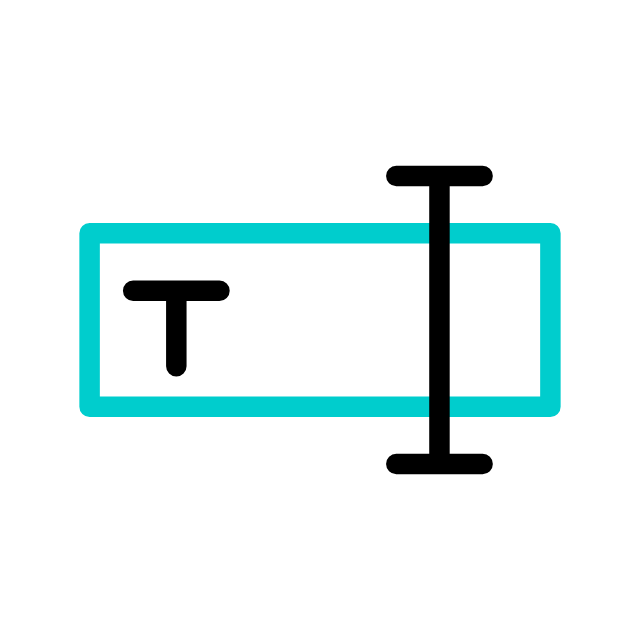

<ion-header>
  <ion-toolbar color="secondary">
    <ion-title>
      QR Generator
    </ion-title>
  </ion-toolbar>
</ion-header>

<ion-content class="">
  
  <ion-segment [(ngModel)]="segment" mode="ios" >
    <ion-segment-button value="scan">
      <ion-label>Escanear QR</ion-label>
    </ion-segment-button>
    <ion-segment-button value="generate">
      <ion-label>Generar QR</ion-label>
    </ion-segment-button>
  </ion-segment>
  
  <!-- Show scan panel -->
  <div *ngIf="segment === 'scan'">
    Scan panel
  </div>

  <!-- Show generate QR panel -->
  <div class="segment" *ngIf="segment === 'generate'">
      <div class="qr-container">
        <div class="qr-background-box">
          <div class="qr-radius">
            <qr-code [value]="qrText" size="240" errorCorrectionLevel="M"></qr-code>
            
          </div>
        </div>
        <div *ngIf="qrText" class="text-container">
          {{qrText}}
        </div>
        <div *ngIf="!qrText" class="text-container">
          Escribe un texto para convertirlo a QR
        </div>
      </div>
      <ion-textarea
        label="Escribe aquí tu texto"
        labelPlacement="stacked"
        fill="outline"
        [(ngModel)]="qrText"
        rows="2"
        [autoGrow]="true"
      ></ion-textarea>
  </div>
</ion-content>
